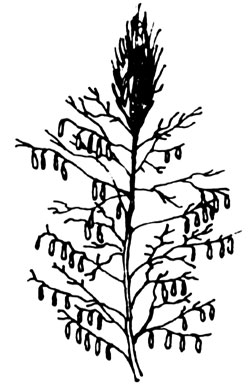
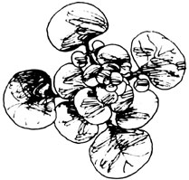
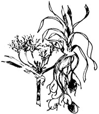
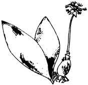
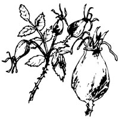
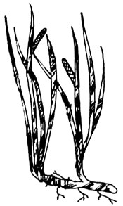

(Zizania aquatica)
This plumy grass, 4-10 feet tall, grows in shallow waters of eastern North America from southern Canada to the Gulf of Mexico. The grain is harvested in late summer or early autumn by paddling a canoe among the plants and knocking the mature seeds into a tarpaulin.
Wild rice must be cleaned before use. Spread the grain to dry in a warm, airy place and parch it for 3 hours in a moderate oven, stirring occasionally. The husks can then be rubbed or beaten off and blown away as the rice is poured back and forth between two containers. To cook this delicacy, wash 1 cup of grain and add it gradually to 1-1/2 cups of salted boiling water. Cover the pan and simmer its contents to tenderness (about half an hour). The result is delicious as is or in a gourmet version of just about any domestic rice recipe.
Barbarea vulgaris and Barbarea verna
These two look-alikes are widespread in the East (B. vulgaris on rich low-lying ground, B.verna more oftenin cultivated fields). The rosettes of glossy, lobed leaves spring up readily during mild winter weather and are an excellent source of early greens.
Winter cress-a mustard-is rich in vitamins and has a slightly peppery flavor that goes well in mixed salads. The young winter leaves are also excellent shredded, flavored with chopped green onion, vinegar, salt, and sugar, and topped with minced bacon (drippings and all). Later in spring the greens take on a bitterness which can be removed by boiling in two waters. When the bloom develops, the leaves become too bitter to eat . . . but the buds can be cooked briefly-no more than 5 minutes overall-in two waters and served like the broccoli they resemble. Lemon butter and Hollandaise sauce are good additions to this wild vegetable.
(Cyperus esculentus)
This spiky-leafed, yellow-flowered sedge grows all over the United States and Canada on rich waste and cultivated ground and in mud flats. The edible tubers (also called "earth almonds") that cling to the roots are gathered in late autumn or early spring.
"Nut grass" has been cultivated for food in Europe and the U.S., with good reason. Chufa tubers are highly nutritious, with a pleasantly nutty flavor, and can be eaten raw. More often, though, they're boiled . . . or well dried in a slow oven and ground into powder which can be used as a supplement to wheat flour. Or try roasting the tasty little morsels like chestnuts. Chufa is also the source of a coffee substitute just clean the tubers, dry them well, and oven-roast them to an even brownness. Then grind the product and brew it in the usual way. (With the price of "real" coffee expected to soar, it's worthwhile to line up replacements.)
(AIlium tricoccum)
Wild leeks grow in rich woods and thickets over most of the Northeast. This member of the onion family has atypical broad, flat leaves . . . but is given away by its odor. The bulbs are gathered in late fall or early spring.
The mild sweetness of the wild leek is delicious in a soup recipe like this one from Bradford Angier: Brown 2 cups chopped wild onions in 1/2 cup butter or margarine. Add 5 cups strong meat stock seasoned with salt and pepper, 1/8 teaspoon mace, and a bay leaf. Simmer the mixture gently for 15 minutes (remove the bay leaf after the first five) and serve it to 4 people. A fine touch: Pour the soup into bowls, top each with a round of toast, add grated Parmesan cheese, and set the dishes in a hot oven for 10 minutes.
(Rosa, various species)
Wild roses-35 or so varieties-grow in fence rows, vacant lots, meadows, and open woods all over the U.S. and much of Canada. The seed pods or "hips" remain on the branches all winter and can be picked when other wild fruits are (like summer) only a pleasant memory.
The rose-oddly enough-is related to the apple and bears a seed pod which is rather similar in flavor. This fruit is especially valuable because of an amazing fact: just three rose hips contain as much vitamin C as one orange. Here's how to capture that goodness in a delicious syrup: Gather red, slightly unripe hips and remove the bud ends. Boil the fruit to softness in a small amount of water. Strain off the liquid, add fresh water, and repeat the process. Then stir in 1 cup sugar or 1/2 cup honey for each 2 cups of juice, boil the syrup to the desired thickness, let it cool, and store in sterilized bottles. This tasty vitamin supplement is widely used in northern Europe.
(Acorus calamus)
These rushes grow throughout the U.S. in shallow water and along the edges of ponds and slow flowing streams. The swordlike leaves resemble iris foliage but give off a spicy fragrance when bruised (be sure this odor is present). Mature stalks are pulled in summer and early fall.
Calamus candy-a familiar Early American treat-is a pleasant nibble once you've acquired a taste for its distinctive flavor. To make the confection, gather sweet flags by pulling the stalks gently until they break away from the root. Cut off the underground portions, wash and peel, and cut them into 1/2-inch pieces. Boil the bits for half an hour in several waters to reduce the strong taste. Then drain them and cook them for 20 minutes barely covered with thick sugar syrup. Dry the candy on waxed paper for a couple of days, roll it in sugar, and store it in closed jars.
 WILD RICE |
 WINTER CRESS |
 CHUFA |
 WILD LEEK |
 ROSE |
 SWEET FLAG |